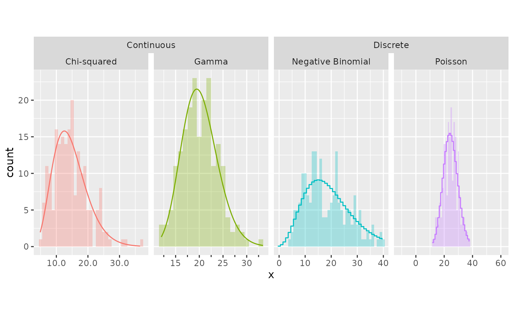

The name ‘ggh4x’, pronounced G-G-hacks (ʤiː-ʤiː-hæks) is leetspeak —or 1ee75p34k, if you will— for grammar of graphics hacks. The ggh4x packages uses the extension capabilities of ggplot2 to provide a variety of utility functions to use in conjunction with ggplot2. A few among these functions do not “fit” within the layered approach of the grammar, as these make small but useful edits to preceding components of a plot. It is for this reason these functions can be a bit hacky and from which the package’s name derives. However, most functions that were added since use the conventional extension system and as such can be used with ggplot2 as you would use the native functions.
Getting started
Using ggh4x is not that different from using ggplot2, as most of the function following their API conventions. Below is an example of the types of things you could do, with as much ggh4x functions as could be reasonably fit into a single plot.
library(ggplot2)
library(ggh4x)
# Setting up some random data
n <- 200
df <- data.frame(
x = c(rpois(n, 25),
rnbinom(n, 5, 0.2),
rgamma(n, 30, 1.5),
rchisq(n, 15)),
distribution = rep(c("Poisson", "Negative Binomial",
"Gamma", "Chi-squared"), each = n),
type = rep(c("Discrete", "Continuous"), each = 2 * n)
)
ggplot(df, aes(x, y = after_stat(count),
fill = distribution, colour = distribution)) +
geom_histogram(position = "identity", binwidth = 1,
alpha = 0.3, colour = NA) +
# One type of theoretical densities for discrete distributions with steps
stat_theodensity(data = ~ subset(.x, type == "Discrete"),
distri = "nbinom", geom = "step",
position = position_nudge(x = -0.5)) +
# Another type for the continuous ones with lines
stat_theodensity(data = ~ subset(.x, type == "Continuous"),
distri = "gamma") +
scale_colour_discrete(aesthetics = c("colour", "fill"), guide = "none") +
# Have the facet strips span categories
facet_nested(~ type + distribution, scales = "free_x") +
# Precisely control aspect ratio of panels
force_panelsizes(rows = 1.618, cols = 1, respect = TRUE) +
# Tweak the scales of individual panels
facetted_pos_scales(list(
scale_x_continuous(labels = scales::number_format(0.1)),
# Give the 2nd panel minor ticks
scale_x_continuous(guide = guide_axis(minor.ticks = TRUE)),
scale_x_continuous(limits = c(0, 40), oob = scales::oob_keep),
scale_x_continuous(expand = c(1, 0))
))
Further reading
Since ggh4x touches several aspects of ggplot2 plots, a few topics are discussed in more detail in vignettes. Please see the vignettes on facet_* functions or stat_* functions.).